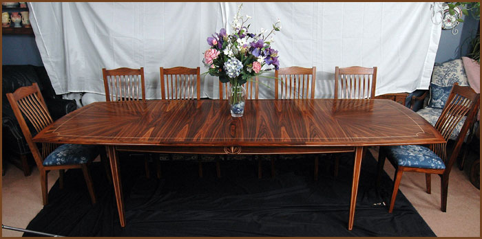

This dining set featured a double sunburst of very fine Santo Domingo Rosewood at each end. These are laid in a bookmatched radial pattern. The string inlay is of Eastern hardrock Maple, both in the chair backs as well as the table apron and top. The balance of the wood is Bolivian Rosewood. The fan at the center of the string ellipse on the top of each chair is proud of the surface. The same motif is on the long side of the apron. There are two leaves stored in the table that let it expand to seat twelve diners. The chairs are very comfortable with a spring back and a deep cushion seat with rubber strapping woven across an open seat frame.

Interested in this piece? Contact Don for pricing and availability.